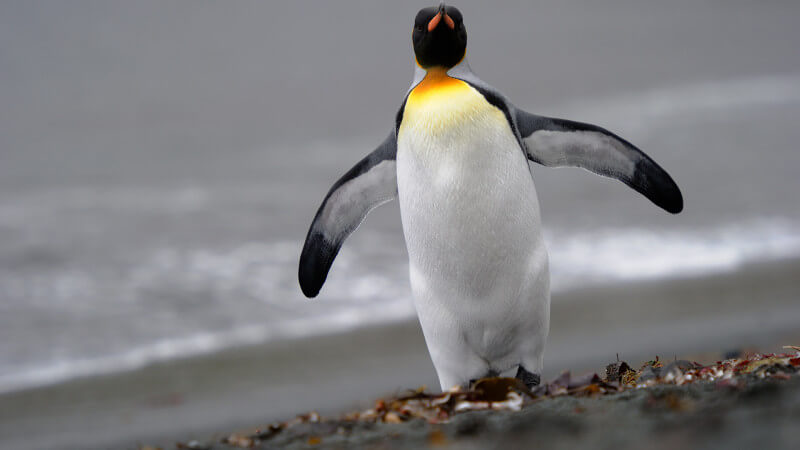
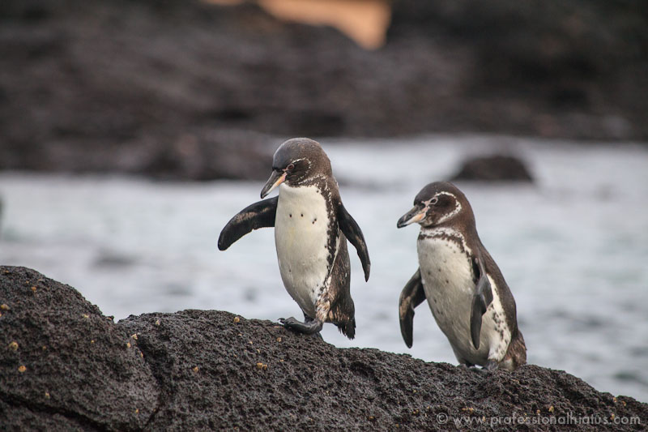
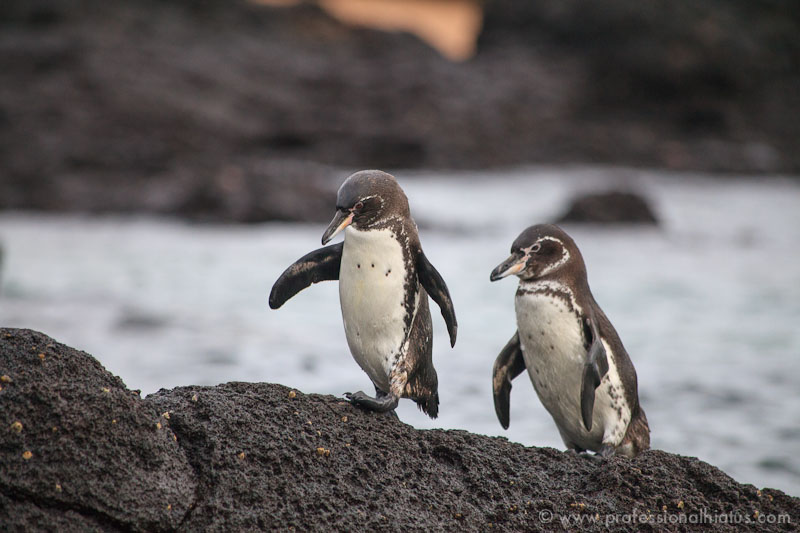

Penguins are a group of aquatic, flightless birds. They live almost exclusively in the Southern Hemisphere, with only one species, the Galapagos penguin, found north of the equator. Highly adapted for life in the water, penguins have countershaded dark and white plumage, and their wings have evolved into flippers. Most penguins feed on krill, fish, squid and other forms of sea life caught while swimming underwater. They spend about half of their lives on land and half in the oceans.
Although almost all penguin species are native to the Southern Hemisphere, they are not found only in cold climates, such as Antarctica. In fact, only a few species of penguin live so far south. Several species are in the temperate zone, and one species, the Galápagos penguin, lives near the equator.
Click here to visit the page where previous stated information is found.  To learn about the King Penguin species click here. To learn about the Chinstrap Penguin species click here.

To learn about the Galapagos Penguin species click here.
To learn about the Chinstrap Penguin species click here.

To learn about the Galapagos Penguin species click here.
5 reasons penguins are the best animal:
Relationship to other bird orders -
Penguin ancestry beyond an extent remains unknown and not well-resolved by molecular or morphological analyses. They tend to be confounded by a sometimes perceived fairly close relationship between penguins and grebes is almost certainly an error based on both groups' strong diving adaptations, which are homoplasies. Although the other hand, different DNA sequence datasets do not agree in detail with each other either.